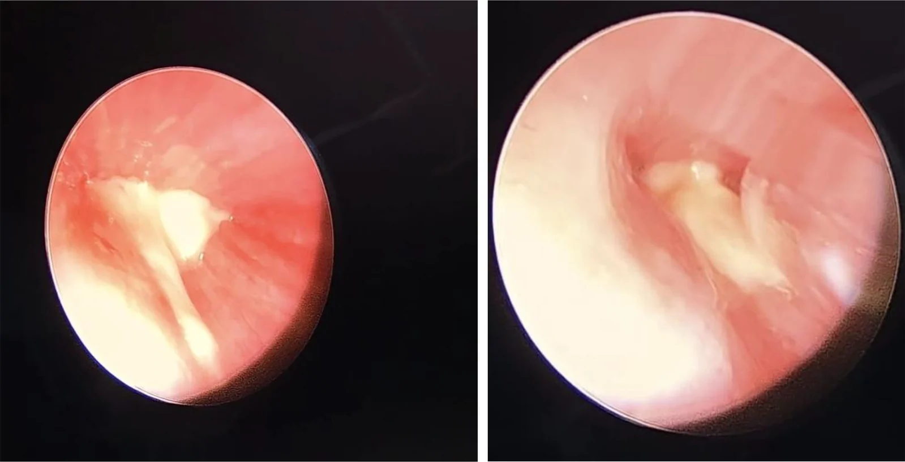
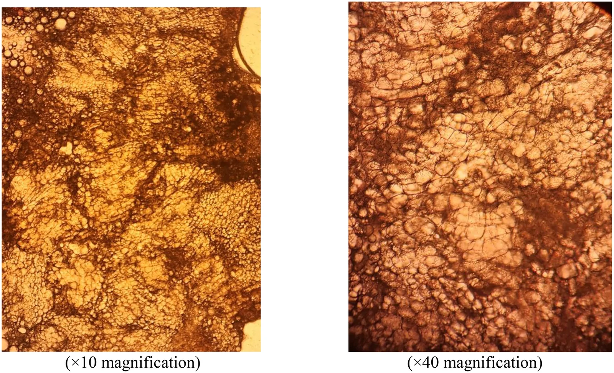
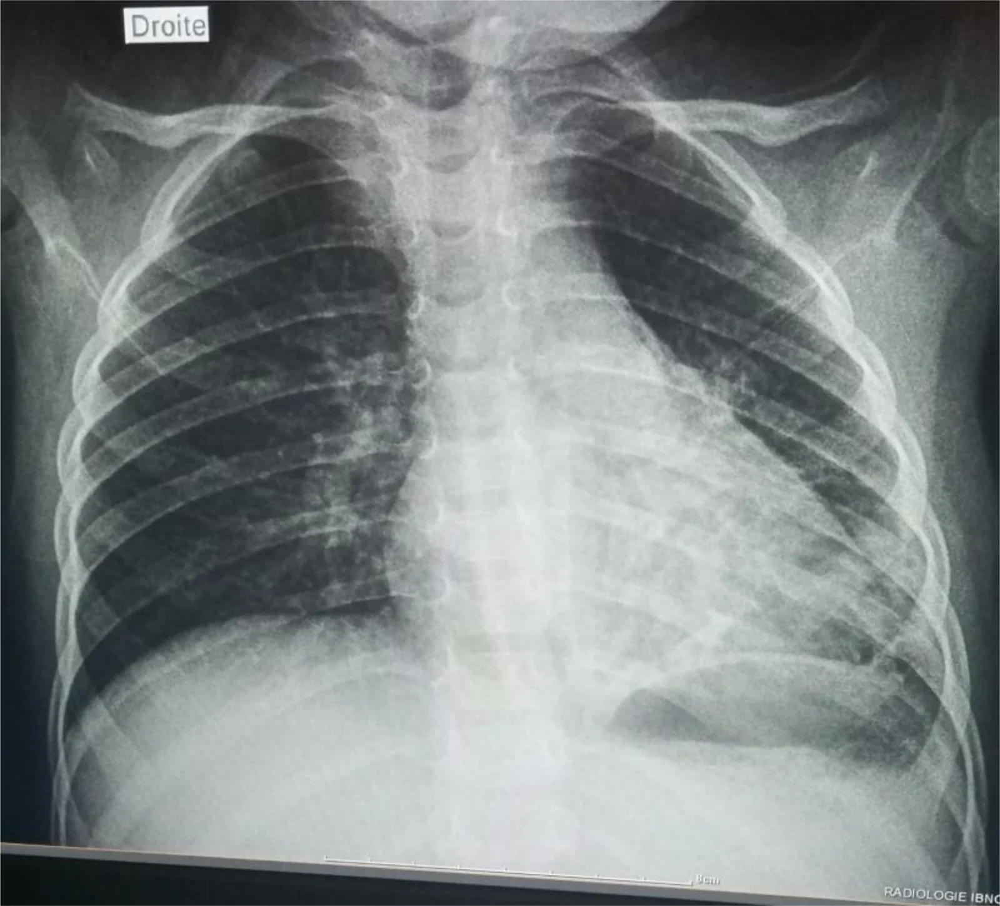
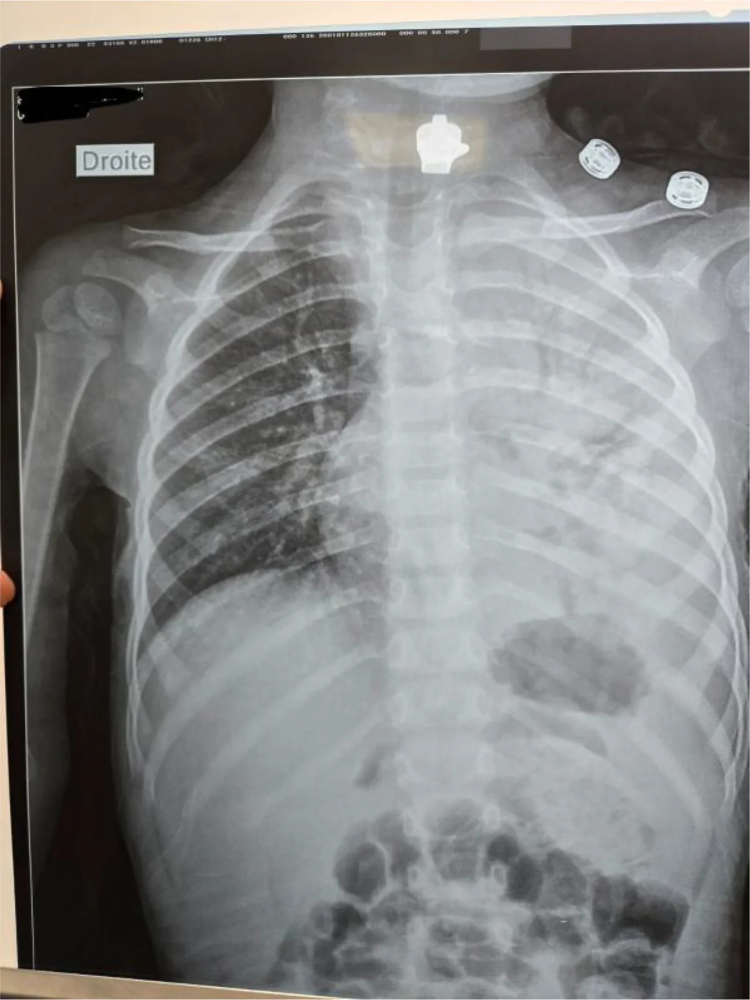
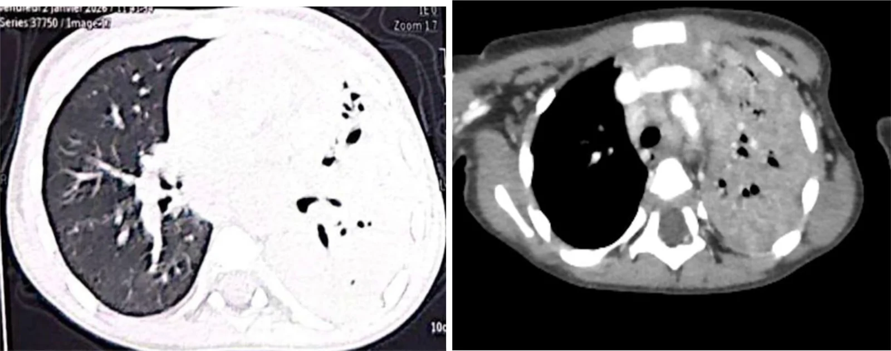
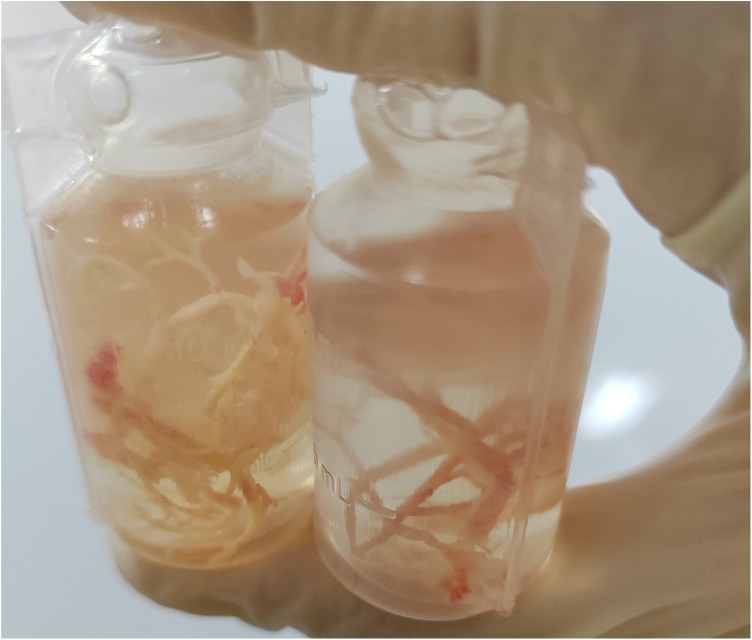
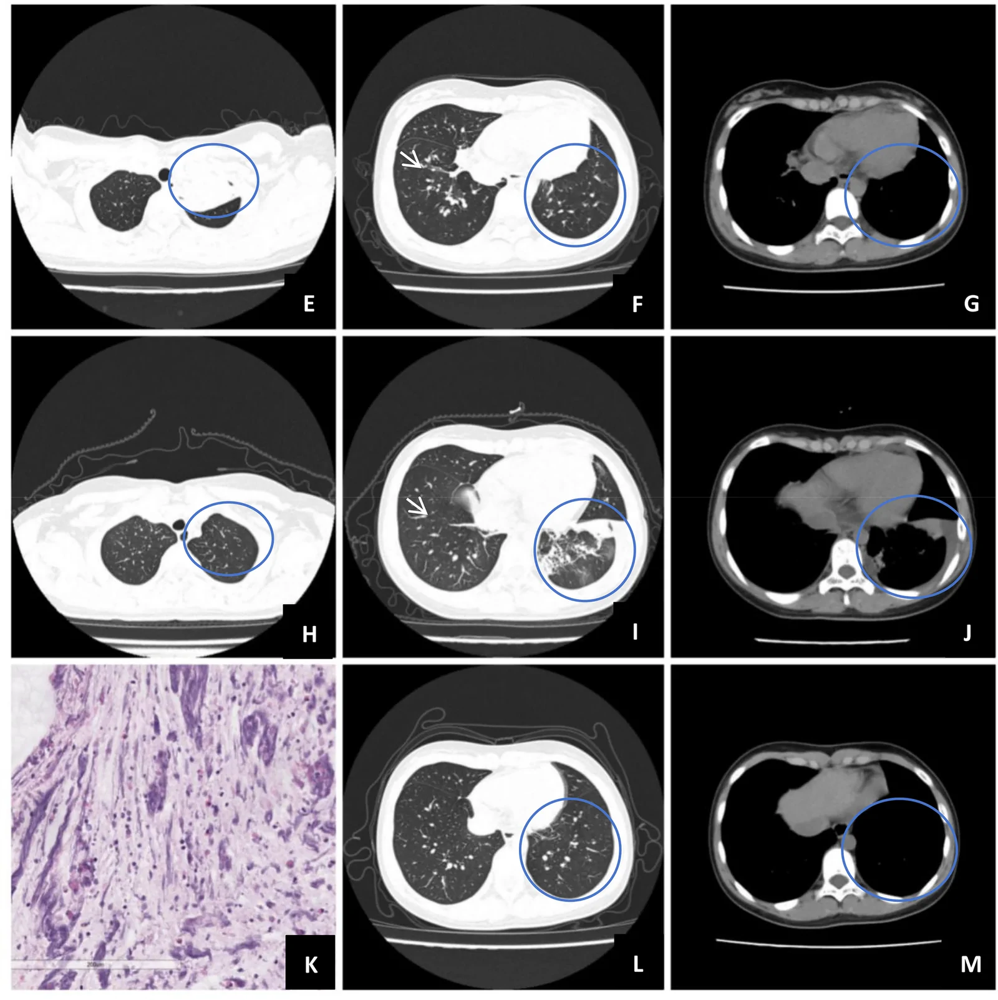

6126 — Viêm phế quản nhựa (plastic bronchitis) & bã nhầy phế quản ở trẻ / Plastic bronchitis & bronchial cast
Tags: pattern:ba-nhay pattern:xep-phoi pattern:mat-the-tich pattern:trang-phoi vung:phe-quan vung:phoi-nhi anatomy:phex-quan protocol:X-quang-nguc protocol:CT-nguc protocol:noi-soi-phe-quan score:Seear incidentaloma:khong
Mức chắc chắn (certainty): tổng hợp y văn (literature synthesis) — ghép tổng quan tự sự 2026 về phân loại và sinh bệnh học (Front Pediatr 2026, PMC13212312), đoàn hệ 86 trẻ PB liên quan nhiễm trùng (Front Pediatr 2026, PMC13021623), đoàn hệ 352 trẻ tái phát (Front Pediatr 2026, PMC13597871), ca “trắng phổi” một bên (BMC Pediatr 2026, PMC13524460) và ca EV-D68 (Front Med 2026, PMC13719561). Không có ca do nhóm tự chụp.
Câu hỏi thực hành: bé trai 2 tuổi 5 tháng, sốt 5 ngày, ho, khó thở; X-quang mờ toàn bộ nửa ngực trái (“trắng phổi”) kèm mất thể tích và trung thất lệch sang trái; CT thấy xẹp toàn bộ phổi trái, nhu mô đông đặc đều, KHÔNG có phế quản hơi sau chỗ tắc. Câu hỏi: viêm phổi hoại tử/tràn mủ màng phổi, dị vật, hay bã nhầy phế quản? Và khi nào phải nội soi phế quản cấp?
1. Tổng quan bệnh học – cơ chế hình ảnh
- Định nghĩa: viêm phế quản nhựa (plastic bronchitis, PB) là tình trạng hình thành bã nhầy (bronchial cast) — khối liên kết, dai, có hình phân nhánh tái hiện đúng kiến trúc cây phế quản — gây tắc đường thở. Đây không phải “nút nhầy thường” (ordinary mucus plug): cast giữ nguyên hình ống–phân nhánh khi lấy ra hoặc khi bệnh nhân ho ra, còn nút nhầy thường mềm, vụn, không giữ hình (PMC13212312).
- Thành phần quyết định tên gọi và điều trị: cast gồm fibrin, mucin, tế bào viêm, tế bào biểu mô bong với tỷ lệ khác nhau. Phân loại Seear 1997 chia 2 thể: thể I (viêm) — nhiều fibrin, ít mucin, có tinh thể Charcot–Leyden và thâm nhiễm bạch cầu ái toan dày đặc; thể II (không tế bào) — nhiều mucin, ít fibrin, ít tế bào. Cast dạng chylous (dưỡng trấp) không lọt vào phân loại này; đây là lý do có khung phân loại mới lymphatic PB (LPB) vs eosinophilic PB.
- TẠI SAO hình ảnh lại “giống ung thư/xẹp phổi”:
- Tắc hoàn toàn lòng phế quản → khí phía sau bị hấp thu (nitơ và oxy) trong vài giờ → xẹp phổi (atelectasis) với mất thể tích rõ: khe di lệch, trung thất lệch cùng bên, cơ hoành nâng, các cung sườn sát nhau.
- Không có phế quản hơi (air bronchogram) sau chỗ tắc vì lòng phế quản đã bị cast lấp đầy — phế quản hơi chỉ xuất hiện khi phế quản còn khí và nhu mô quanh nó đặc. Đây là chốt cơ chế, không phải dấu hiệu “phổi đã hỏng”.
- Cast ngậm nước, không cản quang → trên CT có đậm độ mô mềm–dịch, không vôi hóa, không bắt thuốc; có thể thấy dải phân nhánh trong lòng phế quản hoặc chỉ thấy đông đặc + xẹp.
- Khi cast van một chiều thay vì tắc hoàn toàn → ứ khí (air trapping), thậm chí tràn khí, làm hình ảnh “nặng” hơn thực tế.
- Ngưỡng định lượng cần nhớ (từ các nguồn đã đọc):
- Tần suất chung 6,8/100.000 (một trung tâm Mỹ, 12 năm); theo nhóm: bệnh tim bẩm sinh 113/100.000, viêm phổi/cúm 58/100.000, hen 29/100.000; tử vong 7% (1/14 ca) trong loạt nhỏ này.
- Sau Fontan: 0,1% (4/3.226) trong một nghiên cứu đa trung tâm Nhật; một loạt Australia báo 1,8%.
- Trong viêm phổi do Mycoplasma pneumoniae nặng (SMPP): 14,67% trẻ có PB (nghiên cứu đa trung tâm Trung Quốc).
- Trong 86 trẻ PB liên quan nhiễm trùng: 94,2% do M. pneumoniae (kèm 35,8% đồng nhiễm); 7,4% có kết cục bất lợi (xẹp dai dẳng, giãn phế quản, 1 ca phải mổ).
- Tái phát sau lấy cast: 85/352 = 24,1%; yếu tố dự báo: albumin thấp, sốt kéo dài ≥ 72 giờ sau lần rửa phế quản đầu, xẹp phổi, cast ở ≥ 2 thùy; nomogram AUC 0,853 / 0,833 / 0,811 (huấn luyện / nội kiểm / ngoại kiểm).
- Trong loạt 81 ca MP: tràn dịch màng phổi 25 (30,9%), xẹp phổi 24 (29,6%), viêm phổi hoại tử 14 (17,3%), giãn phế quản 5 (6,2%), khí bóng kẽ phổi 3, thuyên tắc phổi 2.
2. Mẫu hình + chẩn đoán phân biệt theo vị trí & cơ chế (Gamut)
- Theo cơ chế (quan trọng hơn vị trí):
- Nhiễm trùng (thể I hoặc II): M. pneumoniae (hàng đầu ở trẻ lớn), cúm A/B, EV-D68, ho gà, adenovirus, RSV; sau viêm phổi hoại tử.
- Bạch mạch (lymphatic PB, LPB): sau Fontan/Glenn, loạn sản bạch mạch, bất sản ống ngực, hội chứng Noonan; cast dưỡng trấp, tái phát nhiều đợt, thường không có nhiễm trùng khởi phát.
- Tăng bạch cầu ái toan/dị ứng: hen, ABPA, viêm phế quản ái toan; cast thể I, đáp ứng corticoid.
- Khác: bỏng hít, bệnh hồng cầu hình liềm (hội chứng ngực cấp), bụi silic (hiếm), sau phẫu thuật tim.
- Theo vị trí/hình ảnh: một bên “trắng phổi” (cast lấp toàn bộ cây phế quản một bên — ca PMC13524460), một thùy/phân thùy xẹp tái diễn, ứ khí một bên khi van một chiều, hoặc hình “ngón tay trong găng” (finger-in-glove) khi ứ nhầy phế quản.
- Gợi nhớ CAST: Congenital heart (Fontan/Glenn) · Asthma/ABPA (ái toan) · Sepsis/infection (Mycoplasma, cúm, EV-D68) · Thoracic duct/lymphatic dysplasia (LPB).
3. Bảng so sánh phân biệt (ma trận đối chiếu): “trắng phổi/xẹp một bên ở trẻ”
| Thực thể (entity) | Hình ảnh điển hình (CXR/CT) | Chốt vào (rule-in) | Chốt loại (rule-out) | Gợi ý xác nhận |
|---|---|---|---|---|
| Bã nhầy phế quản (PB cast) | Mờ đồng nhất một bên/thùy + mất thể tích; CT: đông đặc đều, KHÔNG phế quản hơi sau chỗ tắc, dày thành phế quản quanh chỗ tắc | Mất thể tích + không phế quản hơi + nội soi thấy cast hình phân nhánh; ho ra “khuôn” phế quản | Đông đặc có phế quản hơi lan tỏa + sốt cao đơn thuần → viêm phổi; có mức dịch màng phổi → empyema | Nội soi phế quản ống mềm (tiêu chuẩn vàng, vừa chẩn đoán vừa điều trị) + gửi cast mô bệnh học |
| Nút nhầy/ứ nhầy do ABPA–hen | Ứ nhầy hình ngón tay trong găng, phế quản giãn trung tâm; thường hai bên, nhiều đợt | Giãn phế quản trung tâm + tăng IgE/bạch cầu ái toan + tiền sử hen | Cast dai giữ hình phân nhánh, một bên, không giãn phế quản → PB | CT lát mỏng, IgE, nội soi |
| Dị vật đường thở | Mờ một thùy/phổi + ứ khí thì thở ra; dị vật cản quang chỉ ~11% | Hội chứng xâm nhập rõ + ứ khí một bên + dị vật thấy trên CT | Mờ đều không ứ khí, không tiền sử sặc → nghĩ PB/viêm phổi | Nội soi phế quản (vừa lấy dị vật) |
| Empyema/mủ màng phổi | Mờ chiếm nửa ngực, hiệu ứng khối (trung thất đẩy xa), split pleura sign, góc tù | Dịch màng phổi vách + trung thất bị đẩy | Mất thể tích + trung thất lệch về phía mờ → không phải empyema | Siêu âm màng phổi, CT có cản quang, chọc hút |
| Viêm phổi hoại tử | Đông đặc + hang/bóng khí trong nhu mô, có thể tràn dịch | Bóng khí trong đông đặc + sốt cao, LDH tăng | Không hang, xẹp đều → PB | CT cản quang, theo dõi |
| Bất sản/dị dạng phổi bẩm sinh | Mờ đều từ sơ sinh, trung thất lệch cùng bên, không thay đổi theo thời gian | Bệnh sử từ sơ sinh + không có đường thở bất thường | Mờ mới xuất hiện sau nhiễm trùng → mắc phải | CT/MRI, nội soi |
Cast phế quản vs nút nhầy thường (đọc đúng bản chất)
- Cast: dai, đàn hồi, giữ hình phân nhánh khi lấy ra; mô học có lớp fibrin/mucin đồng nhất, thể I có bạch cầu ái toan và tinh thể Charcot–Leyden, thể II không tế bào.
- Nút nhầy thường: vụn, dễ vỡ, không tái hiện kiến trúc phế quản; thường gặp trong hen/CF/xẹp do thở máy.
- Hệ quả điều trị: cast cần lấy bằng nội soi (có khi nhiều lần), còn nút nhầy đáp ứng hút/rửa và vật lý trị liệu đường thở.
4. Protocol chụp + hệ phân độ/điểm chuẩn hóa
- Bước 1 — X-quang ngực thẳng: xác nhận mờ + mất thể tích; phân biệt mờ có hiệu ứng khối (empyema/khối) với mờ có mất thể tích (xẹp/cast). X-quang có thể bình thường trong vài giờ đầu.
- Bước 2 — CT ngực liều thấp (có cản quang khi nghi empyema/hoại tử): trả lời “tắc ở đâu, có phế quản hơi không, có hang/dịch màng phổi không”; tìm cast dạng dải trong lòng phế quản, dày thành phế quản, ứ khí.
- Bước 3 — nội soi phế quản ống mềm: tiêu chuẩn vàng; lấy cast, rửa bằng nước muối sinh lý, gửi mô bệnh học + cấy; đánh giá đồng thời TBM/hẹp/dị vật.
- Bước 4 — phân loại và tìm nguyên nhân: mô học theo Seear (I/II); nếu LPB → DCMRL (dynamic contrast-enhanced MR lymphangiography) hoặc CT lymphangiography, siêu âm tim/tìm Fontan; nếu thể ái toan → IgE, test dị ứng, ABPA.
- Điều trị (định hướng, theo nguồn đã đọc):
- Lấy cast bằng nội soi là trung tâm; có thể cần nhiều lần (nhóm kết cục xấu trung vị 3,5 lần so với 2 lần ở nhóm tốt).
- Thể fibrin/ái toan: cân nhắc alteplase khí dung để làm tan cast và heparin khí dung để giảm tái tạo cast fibrin; corticoid toàn thân nếu thể ái toan.
- LPB/Fontan: nút mạch bạch mạch qua da (percutaneous lymphatic embolization) sau khi xác định dòng bạch mạch bất thường; xem xét fenestration ở bệnh nhân Fontan.
- Nhiễm trùng: kháng sinh theo Mycoplasma/vi khuẩn; không có kháng sinh dự phòng để “ngừa cast”.
- Theo dõi tái phát: lịch khám sớm trong 3 tháng đầu (thời điểm tái phát cao); dùng nomogram 4 biến (albumin, sốt ≥ 72 giờ sau rửa lần 1, xẹp phổi, cast ≥ 2 thùy) để phân tầng.
Bằng chứng nội soi – mô học – hồi phục (cùng một bệnh nhi “trắng phổi”):

Cast trắng, dai, lấp lòng phế quản trái — lấy bằng ống mềm. Nguồn: BMC Pediatr 2026 (PMC13524460), Fig. 3, CC BY-NC-ND 4.0, nguyên bản.
Mô học: chất mucin–sợi không tế bào = thể II theo Seear. Nguồn: BMC Pediatr 2026 (PMC13524460), Fig. 4, CC BY-NC-ND 4.0, nguyên bản.
Sau lấy cast: phổi trái gần như tái thông khí hoàn toàn — bằng chứng nhu mô không hoại tử. Nguồn: BMC Pediatr 2026 (PMC13524460), Fig. 5, CC BY-NC-ND 4.0, nguyên bản.flowchart TD
A[Trẻ mờ phổi một bên + mất thể tích] --> B[X-quang ngực]
B --> C{Trung thất lệch về phía mờ?}
C -->|Có| D[CT ngực liều thấp]
C -->|Không, trung thất bị đẩy xa| E[Empyema hoặc khối - siêu âm và chọc hút]
D --> F{Có phế quản hơi sau chỗ tắc?}
F -->|Không| G[Nội soi phế quản cấp]
F -->|Có| H[Viêm phổi đông đặc - điều trị nội khoa]
G --> I[Lấy cast + gửi mô bệnh học]
I --> J{Phân loại Seear}
J -->|Thể I fibrin và ái toan| K[Lấy cast + corticoid + alteplase khí dung]
J -->|Thể II không tế bào| L[Tìm nguyên nhân nhiễm trùng]
L --> M{Fontan hoặc bệnh bạch mạch?}
M -->|Có| N[DCMRL và nút mạch bạch mạch]
M -->|Không| O[Theo dõi tái phát 3 tháng]
5. Biến thể bình thường và cạm bẫy
- Bẫy 1 — “trắng phổi” bị đọc là phổi đã hỏng, chỉ định cắt thùy: nhu mô hồi phục hoàn toàn sau khi lấy cast (X-quang ngày sau nội soi đã gần bình thường trong ca PMC13524460). Không mổ cắt phổi trước khi nội soi.
- Bẫy 2 — thiếu phế quản hơi bị hiểu là “phổi xẹp không hồi phục”: thiếu phế quản hơi chỉ nói lên lòng phế quản bị lấp, không nói nhu mô hoại tử.
- Bẫy 3 — bỏ mất cast bệnh nhân ho/khạc ra: cast có thể bị vứt vào thùng rác; phải giữ và gửi mô bệnh học — đây là mẫu chẩn đoán rẻ nhất.
- Bẫy 4 — nhầm với dị vật: dị vật cản quang chỉ ~11%; CT âm không loại trừ. Tiền sử sặc + ứ khí một bên mới là chốt, còn mất thể tích đều nghiêng về cast.
- Bẫy 5 — coi PB là bệnh “lành tính một đợt”: 24,1% tái phát; nhóm tái phát có cast ≥ 2 thùy, xẹp phổi, sốt kéo dài sau rửa đầu — cần theo dõi chủ động.
- Bẫy 6 — bỏ sót LPB ở bệnh nhân Fontan: cast dưỡng trấp tái phát nhiều đợt, không đáp ứng kháng sinh; cần hình ảnh bạch mạch trước khi leo thang điều trị.
- Biến thể bình thường dễ nhầm: ứ nhầy phế quản thoáng qua sau gây mê/thở máy (nút nhầy mềm, mất sau hút) và giả tổn thương do tư thế trên X-quang — đừng gọi là cast khi không có mất thể tích.
6. Tự lượng giá — Blind Quiz ngay trên trang tĩnh
Ca 1 — Bé 2 tuổi 5 tháng, sốt và khó thở, “trắng phổi” trái. Nhìn phim trước, mô tả trước.

- Gợi ý lâm sàng: sốt 5 ngày, ho nhiều, khó thở; không có tiền sử tim bẩm sinh.
- Câu hỏi: (1) Vì sao nói đây là mất thể tích chứ không phải hiệu ứng khối? (2) Ba chẩn đoán phân biệt hàng đầu? (3) Bước tiếp theo?
Bấm để hiện đáp án (findings + chẩn đoán)
- Dấu hiệu: mờ đồng nhất toàn bộ nửa ngực trái, trung thất lệch sang trái, cơ hoành trái khó thấy, không có mức dịch màng phổi; bóng dạ dày dưới cơ hoành trái cho thấy đây là bên trái.
- Chẩn đoán: xẹp phổi toàn bộ trái do bã nhầy phế quản (plastic bronchitis) — cast lấp cây phế quản trái. Ba phân biệt: empyema (hiệu ứng khối), viêm phổi hoại tử, dị vật.
- Chốt: trung thất lệch về phía mờ = mất thể tích; CT sau đó cho thấy không phế quản hơi và nội soi lấy cast.
- Nguồn ảnh: BMC Pediatr 2026 (PMC13524460), Fig. 1 — CC BY-NC-ND 4.0, nguyên bản.
Ca 2 — Cùng bệnh nhi: CT ngực trước nội soi.

- Câu hỏi: Nhu mô trái đông đặc đều và không có phế quản hơi — dấu hiệu này nói gì về vị trí tắc và tiên lượng? Có nên cắt thùy ngay?
Bấm để hiện đáp án (findings + chẩn đoán)
- Dấu hiệu: phổi trái xẹp hoàn toàn, mất thể tích lớn, trung thất lệch trái; nhu mô đông đặc đồng nhất, không thấy phế quản hơi ngoài mức tắc; dày thành phế quản quanh rốn phổi, không hang, không đường rò, không dị vật cản quang.
- Chẩn đoán: tắc hoàn toàn phế quản gốc trái do cast; nhu mô chưa hoại tử.
- Chốt: không phế quản hơi = lòng phế quản bị lấp, không phải “phổi hỏng”; không cắt thùy trước khi nội soi.
- Nguồn ảnh: BMC Pediatr 2026 (PMC13524460), Fig. 2 — CC BY-NC-ND 4.0, nguyên bản.
Ca 3 — Cast lấy ra và cast bệnh nhân ho khạc.

- Câu hỏi: Vì sao hình dạng phân nhánh, liên kết lại là chốt phân biệt với nút nhầy thường? Mô học thể I và II khác nhau ở đâu, và khác nhau đó đổi điều trị thế nào?
Bấm để hiện đáp án (findings + chẩn đoán)
- Dấu hiệu: khối dai, liền một mảnh, phân nhánh, tái hiện kiến trúc phế quản — “khuôn” của cây phế quản.
- Chẩn đoán: bã nhầy phế quản (bronchial cast). Thể I: nhiều fibrin, ít mucin, tinh thể Charcot–Leyden, bạch cầu ái toan → cân nhắc corticoid + alteplase khí dung. Thể II: nhiều mucin, ít fibrin, ít tế bào → điều trị theo nguyên nhân (nhiễm trùng, LPB).
- Chốt: giữ hình phân nhánh + dai là dấu hiệu đại thể; mô bệnh học quyết định thể.
- Nguồn ảnh: Front Pediatr 2026 (PMC13212312), Fig. 1 — CC BY 4.0, nguyên bản.
Ca 4 — Trẻ sau nhiễm EV-D68: mờ thùy trên trái, giảm thể tích.

- Gợi ý: sốt, khò khè, sau nhiễm virus đường hô hấp.
- Câu hỏi: Hình ảnh này gợi ý tắc ở đâu? Cần làm gì để xác nhận và lấy bã?
Bấm để hiện đáp án (findings + chẩn đoán)
- Dấu hiệu: mờ vá đông đặc thùy trên trái kèm giảm thể tích (vòng tròn đánh dấu), nốt nhỏ đáy phổi hai bên; sau điều trị và nội soi, phổi tái thông khí ở CT ngày 10.
- Chẩn đoán: PB sau nhiễm EV-D68; cast lấy qua nội soi phế quản.
- Chốt: giảm thể tích khu trú + không phế quản hơi trong bối cảnh nhiễm virus → nội soi sớm.
- Nguồn ảnh: Front Med 2026 (PMC13719561), Fig. 2 — CC BY 4.0, nguyên bản.
Bài liên quan chéo
- 6101 – Xẹp phổi một bên tái diễn ở trẻ BPD/TBM
- 602 – Tracheobronchomalacia ở trẻ BPD
- 606 – BPD ở trẻ sinh non
- 616 – Biến chứng viêm phổi nhi: empyema & hoại tử
- 614 – Bệnh tiểu phế quản tắc nghẽn (BO/Swyer–James)
- 612 – Cấp cứu đường thở trên ở trẻ em
Ảnh
- File:
6126_plastic-bronchitis_X-quang_PMC13524460-F1.webp,…_CT_PMC13524460-F2.webp,…_noi-soi_PMC13524460-F3.webp,…_mo-hoc_PMC13524460-F4.webp,…_X-quang_PMC13524460-F5.webp(BMC Pediatr 2026, CC BY-NC-ND 4.0 — nguyên bản, không crop/ghép). 6126_plastic-bronchitis_cast_PMC13212312-F1.jpg(Front Pediatr 2026, CC BY 4.0).6126_plastic-bronchitis_CT_PMC13719561-F2.webp(Front Med 2026, CC BY 4.0).- Nguồn + giấy phép từng ảnh:
images/CREDITS.md.
Không dùng để chẩn đoán độc lập khi chưa có người hướng dẫn.